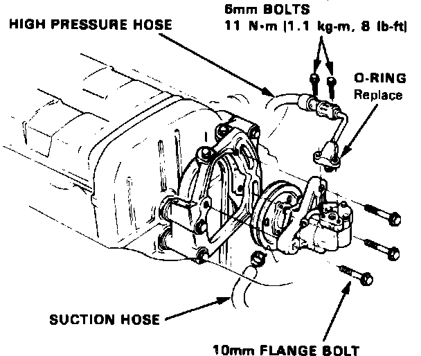

Power Steering Pump: Service and Repair
Fig. 32 Power Steering Pump Replacement:

1. Disconnect and cap hoses from power steering pump reservoir.
2. Remove power steering pump attaching bolts, then the pump pulley and pump, Fig. 32.
3. Reverse procedure to install. Torque pump attaching bolts to specifications.